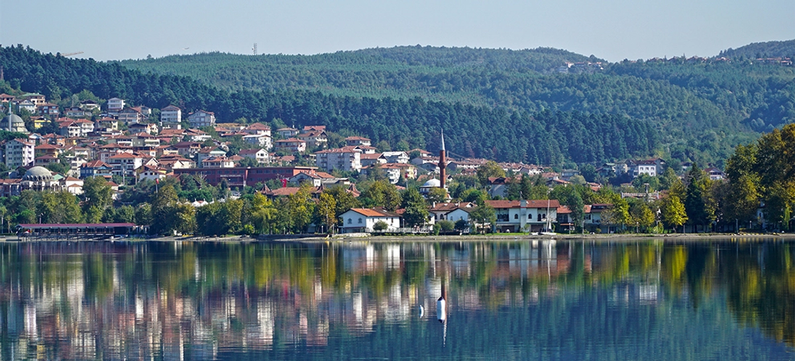
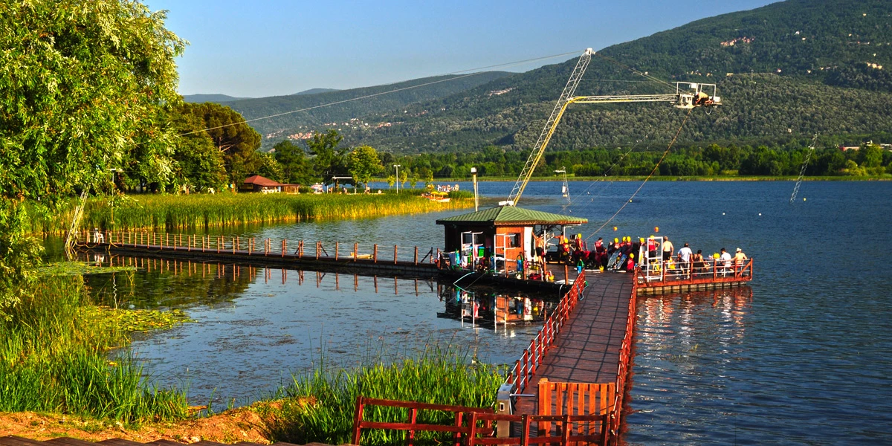
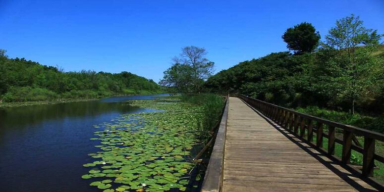
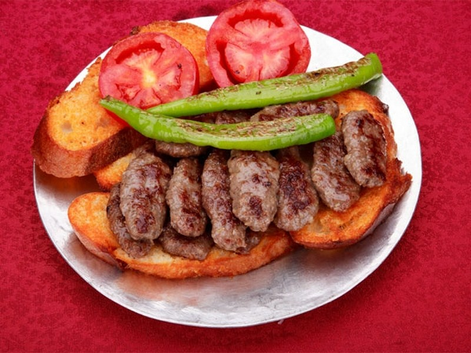
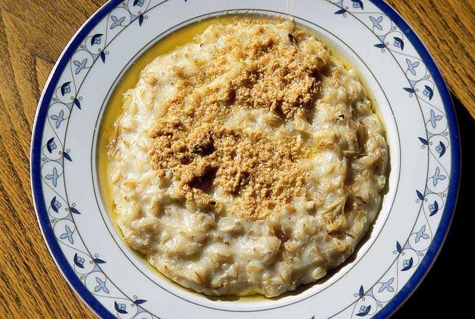
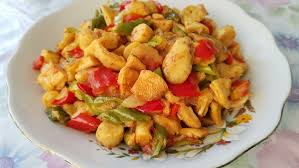
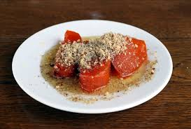

Sakarya Hakkında
Sakarya, Türkiye'nin Marmara Bölgesi'nde yer alan doğal güzellikleri, yeşil doğası ve temiz havasıyla bilinen bir şehirdir. Karadeniz’e kıyısı bulunur ve bu nedenle hem deniz hem doğa turizmi açısından oldukça zengindir. Şehir aynı zamanda sanayi bakımından da gelişmiştir. Sakarya Nehri, şehre adını vermiş ve bölgeye ayrı bir güzellik katmıştır.

Gezilecek Yerler
Sakarya’da gezilecek birçok doğal ve tarihi yer bulunmaktadır. En bilinen turistik yerlerden bazıları şunlardır:
- Sapanca Gölü: Doğasıyla ünlü göl, yürüyüş yolları ve kafe alanlarıyla özellikle hafta sonları çok rağbet görür.
- Maşukiye: Şelaleleri ve yeşil doğasıyla bilinir, kahvaltı mekânlarıyla meşhurdur.
- Taraklı Evleri: Osmanlı döneminden kalma tarihi evleriyle ünlü bir kasabadır.
- Karasu Sahili: Uzun kumsalları ve yaz aylarında turistik hareketliliğiyle bilinir.
- Acarlar Longozu: Türkiye'nin en büyük longoz ormanlarından biridir.


Meşhur Yemekler
Sakarya mutfağı, Karadeniz ve Marmara kültürlerinin birleşimiyle oluşmuş zengin bir yapıya sahiptir. İşte Sakarya’ya özgü bazı meşhur lezzetler:

Islama Köfte
Şehrin en bilinen yemeği. Ekmek dilimleri et suyu ile ıslatılıp köfteyle birlikte servis edilir.

Keşkek
Buğday ve etin birlikte pişirilmesiyle yapılan geleneksel bir yemektir.
Sakarya’da özellikle düğünlerde ve özel günlerde hazırlanır.

Dağ Mantarı Kavurması
Sakarya dağlarından toplanan mantarlarla yapılan yöresel bir yemektir.

Kabak Tatlısı
Şekerle fırınlanmış kabak tatlısı, cevizle servis edilir ve oldukça meşhurdur.
Kültürel Özellikler
Sakarya, farklı bölgelerden göç aldığı için çok kültürlü bir yapıya sahiptir. Halkı sıcakkanlı ve misafirperverdir. Şehirde yıl boyunca kültür festivalleri, yöresel pazarlar ve spor etkinlikleri düzenlenmektedir. Ayrıca şehir, Türkiye'nin önemli tarım merkezlerinden biri olup doğal ürünleriyle de tanınır.